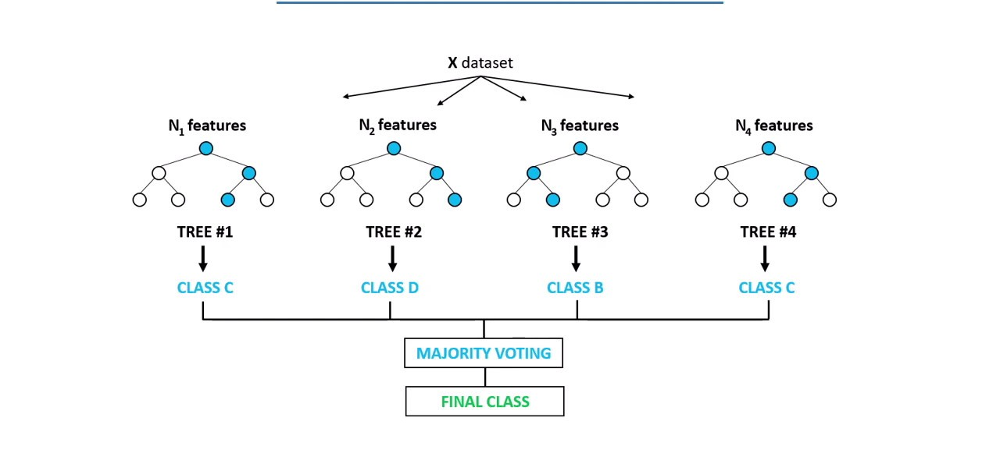
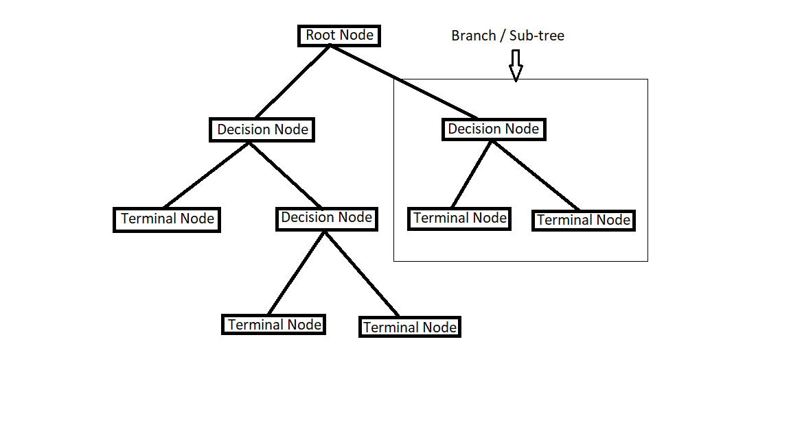
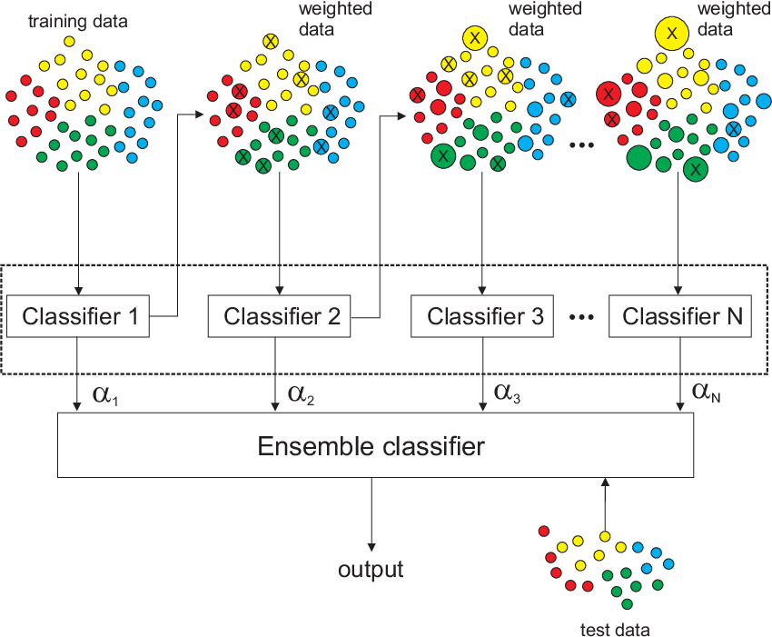
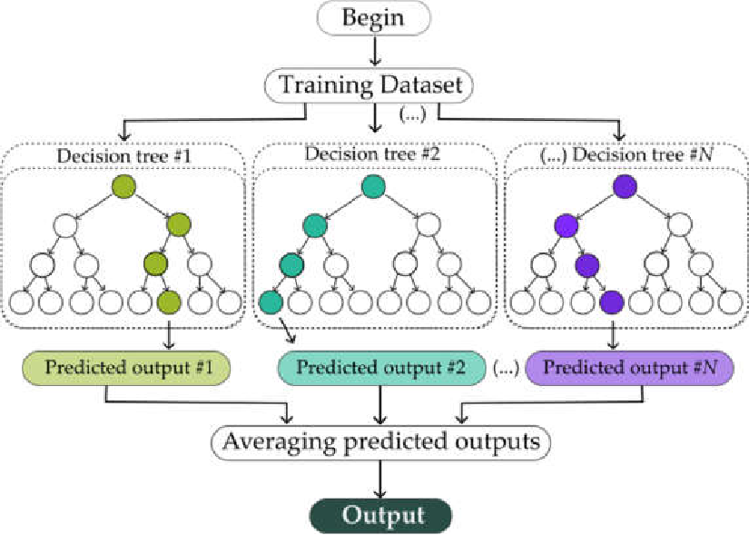
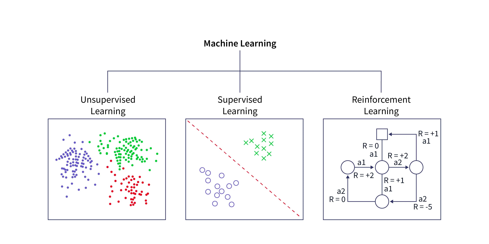
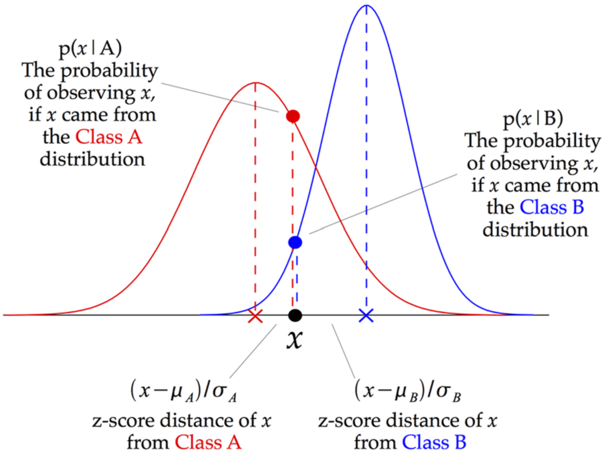
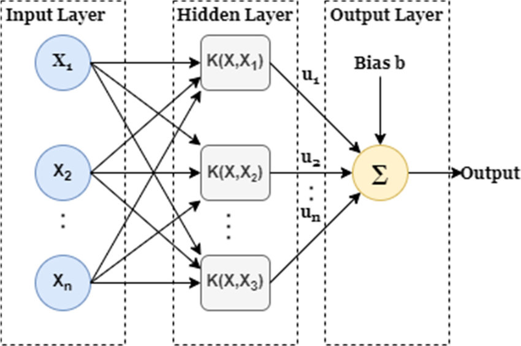

Our ASD detection model is powered by a sophisticated combination of machine learning algorithms. We've carefully selected few algorithms to effectively process and interpret the complex patterns present in the data. This page offers a technical overview of each algorithm, outlining its specific function and contribution to the overall accuracy and reliability of our detection tool.
Description
Each tree in the forest is trained on a random subset of the data, reducing overfitting and improving generalization. This makes it a robust and versatile algorithm suitable for various healthcare
applications, including disease diagnosis, patient risk stratification,medical image analysis, drug discovery, and clinical decision support systems.
Key features

Description
Logistic Regression is a statistical method used to model the probability of a binary outcome. It's widely used in various fields, including healthcare, finance, and marketing. In the context
of healthcare, it can be used to predict the likelihood of a patient developing a specific disease, or the probability of a particular treatment being effective.
Key features
Description
A Decision Tree is a tree-like model of decisions and their possible consequences, including chance event outcomes, resource costs, and utility. It is a non-parametric supervised learning method
used for both classification and regression tasks. The tree is constructed by splitting the data into subsets based on feature values. This process continues recursively until a stopping criterion is met.
Key features

Description
AdaBoost, short for Adaptive Boosting, is a powerful ensemble learning technique that combines multiple weak learners to create a strong classifier. It works iteratively, focusing on misclassified
samples in each round. By assigning higher weights to these misclassified samples, subsequent models are encouraged to learn from their mistakes. This adaptive approach leads to improved overall performance.
Key features

Description
Extra Trees, or Extremely Randomized Trees, is an ensemble learning method similar to Random Forest. However, it introduces additional randomness in the tree construction process. Instead of selecting
the best split point for each node, Extra Trees randomly selects a split point from a subset of features. This increased randomness leads to a more diverse ensemble and can improve performance, especially in high-dimensional
datasets.
Key features

Description
K-Nearest Neighbors is a simple yet effective classification algorithm. It classifies a new data point based on the majority vote of its k nearest neighbors. The distance between data points is
calculated using metrics like Euclidean distance or Manhattan distance.
Key features

Description
Gaussian Naive Bayes is a probabilistic classification algorithm that assumes features follow a Gaussian distribution. It's particularly useful for continuous numerical data. It calculates the
probability of a data point belonging to a particular class based on Bayes' theorem and the assumption of feature independence.
Key features

Description
Support Vector Machine (SVM) is a powerful supervised machine learning algorithm used for both classification and regression tasks. It aims to find the optimal hyperplane that separates different
classes of data points with the maximum margin. SVMs are particularly effective for high-dimensional data and can handle complex decision boundaries.
Key features
